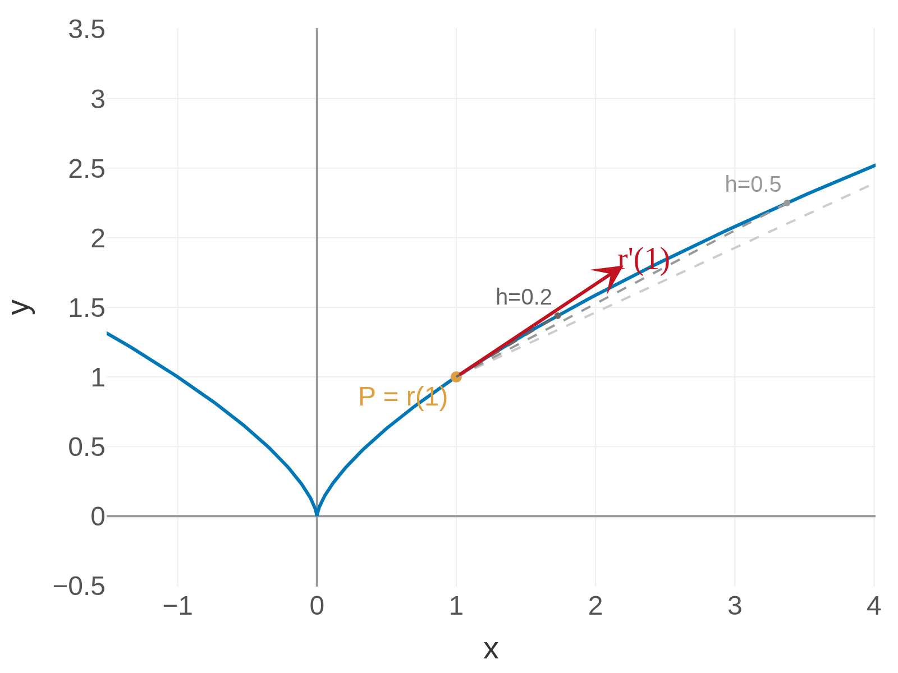

Section 13.2: Derivatives and Integrals of Vector Functions
Vector Functions
MTH 310
Calculus III
Derivatives of Vector Functions
In Calc I, the derivative measured rate of change of a scalar function.
For a vector function, the same limit definition applies — but the output is now a vector.
Definition 1: Derivative of a Vector Function
\[\frac{d\vec{r}}{dt} = \vec{r}\,'(t) = \lim_{h \to 0} \frac{\vec{r}(t+h) - \vec{r}(t)}{h}\]
If \(\vec{r}(t) = \langle f(t),\, g(t),\, h(t) \rangle\), then:
\[\vec{r}\,'(t) = \langle f'(t),\, g'(t),\, h'(t) \rangle\]
Just differentiate each component separately.
Physical interpretation: If \(t\) is time and \(\vec{r}(t)\) is position, then \(\vec{r}\,'(t)\) is the velocity vector — it tells you how fast and in which direction you're moving.
What Does \(\vec{r}\,'(t)\) Mean Geometrically?
In Calc I, the derivative was the slope of the tangent line. Here:
The difference \(\vec{r}(t+h) - \vec{r}(t)\) points from the current position to a nearby position on the curve.
Dividing by \(h\) gives a secant vector along the curve.
As \(h \to 0\), the secant vector approaches the tangent vector \(\vec{r}\,'(t)\).

with the point P at t=1 marked. Three dashed secant vectors are drawn from P to points on the curve at h=0.8, 0.5, and 0.2, progressively approaching the red tangent vector r'(1). As h decreases, the secant vectors converge to the tangent direction. ">So \(\vec{r}\,'(t)\) is a vector that:
- Points in the direction the curve is heading at time \(t\)
- Has magnitude equal to the speed: \(|\vec{r}\,'(t)| = \) speed
The Unit Tangent Vector
Sometimes we only care about the direction of travel, not the speed. We normalize:
Definition 2: Unit Tangent Vector
\[\vec{T}(t) = \frac{\vec{r}\,'(t)}{|\vec{r}\,'(t)|}\]
This is a unit vector (\(|\vec{T}| = 1\)) that points in the direction of motion.
Think of it this way:
- \(\vec{r}\,'(t)\) = velocity (direction and speed)
- \(|\vec{r}\,'(t)|\) = speed (magnitude only)
- \(\vec{T}(t)\) = direction only (no speed information)
Example 1: Find \(\vec{r}\,'(t)\) and \(\vec{T}(t)\) for \(\vec{r}(t) = \langle t^3,\, t^2 \rangle\) at \(t = 1\)
This is the same curve from Section 13.1 — now we're finding its velocity and direction at \(t = 1\).
Step 1 — Differentiate component by component:
\(\vec{r}\,'(t) = \langle 3t^2,\, 2t \rangle \quad\Rightarrow\quad \vec{r}\,'(1) = \langle 3,\, 2 \rangle\)
Step 2 — Find the speed: \(|\vec{r}\,'(1)| = \sqrt{3^2 + 2^2} = \sqrt{13}\)
Step 3 — Normalize: \(\vec{T}(1) = \dfrac{\langle 3, 2 \rangle}{\sqrt{13}} = \left\langle \dfrac{3}{\sqrt{13}},\, \dfrac{2}{\sqrt{13}} \right\rangle\)

The Velocity Vector as a Prediction
In Calc I, the tangent line was the best linear approximation to \(f(x)\) near a point.
Here, the velocity vector predicts where you'll be after a short time step.
Starting at \(\vec{r}(1) = \langle 1, 1 \rangle\) with velocity \(\vec{r}\,'(1) = \langle 3, 2 \rangle\):
Actual position at \(t = 1.1\) — follow the curve:
\[\vec{r}(1.1) = \langle 1.1^3,\; 1.1^2 \rangle = \langle 1.331,\; 1.21 \rangle\]
Predicted position — follow the velocity for \(\Delta t = 0.1\):
\[\vec{r}(1) + 0.1\,\vec{r}\,'(1) = \langle 1, 1 \rangle + 0.1\langle 3, 2 \rangle = \langle 1.3,\; 1.2 \rangle\]

Your Turn: Find \(\vec{r}\,'(t)\) and \(\vec{T}(t)\) for \(\vec{r}(t) = \langle \cos t,\, \sin t,\, t \rangle\) at \(t = 0\)
This is the helix from Section 13.1. Differentiate, evaluate, normalize.
Theorem: Constant Distance \(\Rightarrow\) Orthogonality
Question: If a particle moves on a sphere (constant distance from the origin), what can we say about its velocity?
Think about it: a ball swinging on a string always moves sideways, never toward or away from the center.
Definition 3: Orthogonality Theorem
If \(|\vec{r}(t)| = c\) (constant), then \(\vec{r}(t) \cdot \vec{r}\,'(t) = 0\).
In other words: position \(\perp\) velocity.
Proof: Start with \(|\vec{r}(t)|^2 = c^2\), i.e., \(\vec{r}(t) \cdot \vec{r}(t) = c^2\).
Differentiate both sides using the product rule for dot products:
\(\vec{r}\,'(t) \cdot \vec{r}(t) + \vec{r}(t) \cdot \vec{r}\,'(t) = 0\)
\(2\,\vec{r}(t) \cdot \vec{r}\,'(t) = 0 \quad\Rightarrow\quad \vec{r}(t) \cdot \vec{r}\,'(t) = 0 \quad\square\)

Integrals of Vector Functions
Motivation: If \(\vec{r}\,'(t)\) is velocity, what is \(\int_a^b \vec{r}\,'(t)\,dt\)?
Just like in Calc I: integrating velocity gives displacement (change in position).
The rule is the same as for derivatives — component by component.
Definition 4: Definite Integral of a Vector Function
\[\int_a^b \vec{r}(t)\, dt = \left\langle \int_a^b f(t)\, dt,\; \int_a^b g(t)\, dt,\; \int_a^b h(t)\, dt \right\rangle\]
For antiderivatives, don't forget the constant is now a vector:
\[\int \vec{r}(t)\, dt = \left\langle \int f(t)\, dt,\; \int g(t)\, dt,\; \int h(t)\, dt \right\rangle + \vec{C}\]
Example 2: Evaluate \(\displaystyle\int_1^4 \left( 2t^{3/2}\,\mathbf{i} + \frac{1}{1+t^2}\,\mathbf{j} + (t+1)\sqrt{t}\,\mathbf{k} \right) dt\)
Integrate each component separately. Each one is a standard Calc I integral.
\(\mathbf{i}\)-component (power rule): \(\displaystyle\int_1^4 2t^{3/2}\, dt = \frac{4}{5}\, t^{5/2}\Big|_1^4 = \frac{4}{5}(32 - 1) = \frac{124}{5}\)
\(\mathbf{j}\)-component (arctan): \(\displaystyle\int_1^4 \frac{1}{1+t^2}\, dt = \arctan t\Big|_1^4 = \arctan 4 - \frac{\pi}{4}\)
\(\mathbf{k}\)-component (expand first, then power rule):
\(\displaystyle\int_1^4 (t+1)\sqrt{t}\, dt = \int_1^4 (t^{3/2} + t^{1/2})\, dt = \frac{2}{5}\,t^{5/2} + \frac{2}{3}\,t^{3/2}\Big|_1^4 = \frac{256}{15}\)
Your Turn: Evaluate \(\displaystyle\int_0^{\pi/2} \langle \cos t,\, \sin t,\, 1 \rangle\, dt\)
Integrate each component from \(0\) to \(\pi/2\).